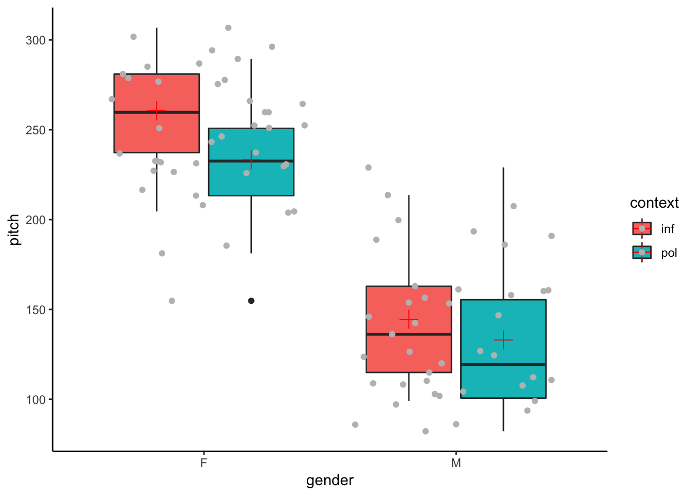
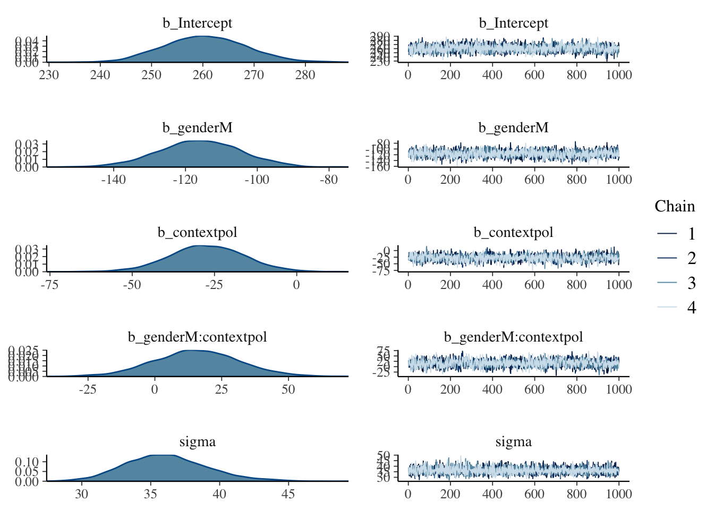
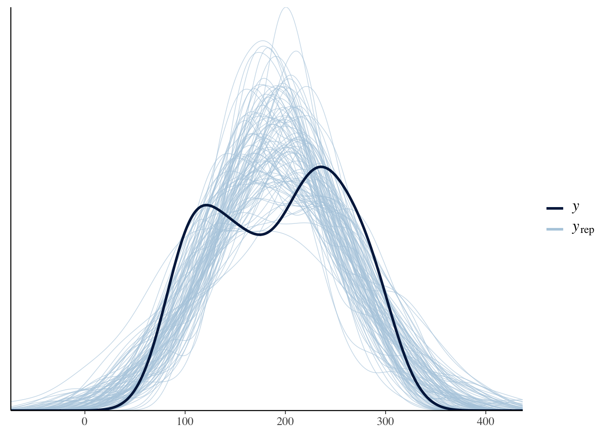
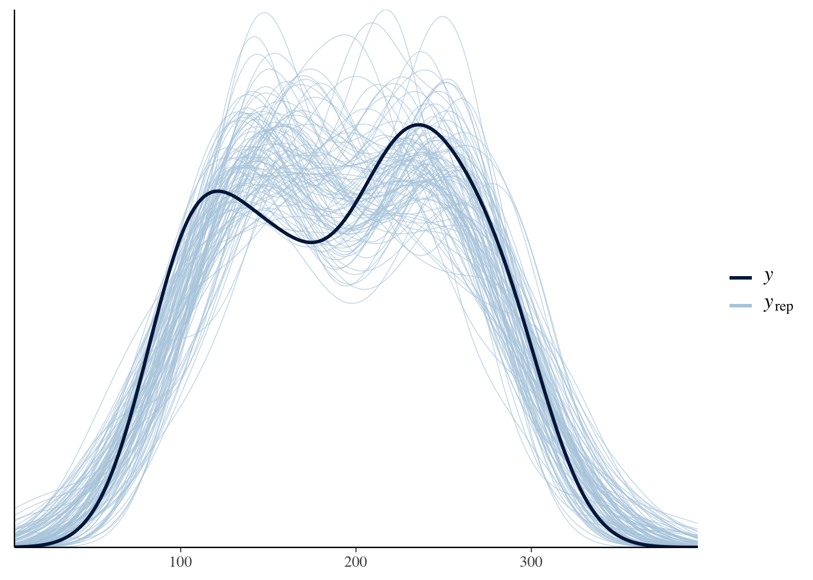

Chapter 2 Bayesian Regression Models using BRMS
library(tidyverse)
library(lme4) # frequentist linear mixed-effects models
library(brms) # Bayesian regression models
library(HDInterval) # credible interval computation (highest posterier density)2.1 What is BRMS?
BRMS is an R package for Bayesian statistical analysis developed by Paul Buerkner (Bürkner and others 2017). It stands for Bayesian Regression Models using Stan. Stan is a probabilistic programming language developed by a team of programmers and statisticians headed by Andrew Gelman at Columbia University. It allows for developing Bayesian statistical models. BRMS provides an easy to use R interface to Stan so that instead of writing Stan code, we write our models in the familiar lme4 langauge. BRMS translates our R code to Stan and brings back the results.
2.2 Continuous DV
Main Questions:
- Does voice pitch differ across female and male speakers?
- How much does it depend on the social context?
We use the data provided by Franke and Roettger:
politedata <- read.csv("https://raw.githubusercontent.com/michael-franke/bayes_mixed_regression_tutorial/master/code/politeness_data.csv")
head(politedata)## subject gender sentence context pitch
## 1 F1 F S1 pol 213.3
## 2 F1 F S1 inf 204.5
## 3 F1 F S2 pol 285.1
## 4 F1 F S2 inf 259.7
## 5 F1 F S3 pol 203.9
## 6 F1 F S3 inf 286.9Always a good idea to look at the summary of the data:
## subject gender sentence context pitch
## F1:14 F:42 S1:12 inf:42 Min. : 82.2
## F2:14 M:41 S2:12 pol:41 1st Qu.:131.6
## F3:14 S3:12 Median :203.9
## M3:14 S4:12 Mean :193.6
## M4:13 S5:12 3rd Qu.:248.6
## M7:14 S6:11 Max. :306.8
## S7:12Let’s plot the data:
ggplot(politedata, aes(gender, pitch, fill=context)) +
geom_boxplot() + # create boxplots
stat_summary(fun.y=mean,
geom="point",
position = position_dodge(width=0.75),
shape=3,
size=4,
color="red") + # add the mean value to the boxplot
geom_jitter(color="grey") + # add invidual data points with jitter so that we can see them
theme_classic()
We will consider 3 hypotheses:
\(H_1\): Female speakers have a lower average pitch in polite than in informal contexts.
\(H_2\): Male speakers have a lower average pitch in polite than in informal contexts.
\(H_3\): Male speakers have a lower average pitch in informal than female speakers have in polite contexts.

Digram of the design and the hypotheses
2.2.1 Fixed-effects Model
Let’s start with a simple fixed-effects frequentist regression model using the function lm in R.
##
## Call:
## lm(formula = pitch ~ gender * context, data = politedata)
##
## Residuals:
## Min 1Q Median 3Q Max
## -78.486 -27.383 -0.986 20.570 96.020
##
## Coefficients:
## Estimate Std. Error t value Pr(>|t|)
## (Intercept) 260.686 7.784 33.491 <2e-16 ***
## genderM -116.195 11.008 -10.556 <2e-16 ***
## contextpol -27.400 11.008 -2.489 0.0149 *
## genderM:contextpol 15.890 15.664 1.014 0.3135
## ---
## Signif. codes: 0 '***' 0.001 '**' 0.01 '*' 0.05 '.' 0.1 ' ' 1
##
## Residual standard error: 35.67 on 79 degrees of freedom
## Multiple R-squared: 0.7147, Adjusted R-squared: 0.7038
## F-statistic: 65.95 on 3 and 79 DF, p-value: < 2.2e-16The model shows that pitch is significantly lower for male speakers in an informal context than female speakers in an informal context. A contrast we were not interested in. The model also shows that pitch is significantly lower in a polite context than informal context for female speakers. This is our first hypothesis (\(H_1\)). Finally the model shows that there is no significant interaction between context and gender.
Let’s do the same thing the Bayesian way, using brms:
# run regression model in brms
BaysModel_FE = brm(
formula = pitch ~ gender * context,
data = politedata,
family = "gaussian",
file = "models/BaysModel_FE"
)
# print out model_FE summary
BaysModel_FE## Family: gaussian
## Links: mu = identity; sigma = identity
## Formula: pitch ~ gender * context
## Data: politedata (Number of observations: 83)
## Samples: 4 chains, each with iter = 2000; warmup = 1000; thin = 1;
## total post-warmup samples = 4000
##
## Population-Level Effects:
## Estimate Est.Error l-95% CI u-95% CI Eff.Sample Rhat
## Intercept 260.51 8.02 245.67 276.40 2358 1.00
## genderM -116.03 11.35 -138.71 -94.06 2161 1.00
## contextpol -27.27 11.38 -49.77 -5.01 2007 1.00
## genderM:contextpol 15.71 16.06 -15.72 47.53 1792 1.00
##
## Family Specific Parameters:
## Estimate Est.Error l-95% CI u-95% CI Eff.Sample Rhat
## sigma 36.15 2.96 30.81 42.67 3329 1.00
##
## Samples were drawn using sampling(NUTS). For each parameter, Eff.Sample
## is a crude measure of effective sample size, and Rhat is the potential
## scale reduction factor on split chains (at convergence, Rhat = 1).As you can see the results are very similar. With Bayesian models, it is important to look at the posterior distribution of our parameters, and most importantly, the trace plots of the chains to make sure they have converged.

We can also extract the posterior samples from our model:
# extract posterior samples
post_samples_FE <- posterior_samples(BaysModel_FE)
head(post_samples_FE %>% round(1))## b_Intercept b_genderM b_contextpol b_genderM:contextpol sigma lp__
## 1 252.1 -110.3 -20.1 19.5 37.0 -420.5
## 2 263.2 -119.7 -32.9 6.7 34.4 -421.4
## 3 253.2 -104.7 -19.9 17.2 33.7 -421.3
## 4 268.7 -120.6 -28.5 5.5 31.4 -422.1
## 5 261.1 -116.6 -24.3 11.9 32.7 -419.6
## 6 252.7 -123.5 -32.3 32.2 32.9 -424.2Using posterior samples, we can estimate the probability of the hypotheses we are interested in. Let’s consider \(H_1\): Female speakers have a lower average pitch in polite than in informal contexts. Our model estimates female pitch in the informal context as its intercept (\(\beta_0\)). It estimates female pitch in polite context as \(\beta_0 + \beta_{pol}\). Therefore, asking our model whether politeness lowers pitch in females is similar to asking if \(\beta_{pol}\) is negative (\(b_{pol} < 0\)). We are not interested in a particular sample estimate but rather, across samples, how likely is that polite context has a negative contribution? (\(P(b_{polite} < 0 | model, data)\)). We can estimate the answer using the proportion of negative samples for the politeness parameter:
## [1] 0.99225Now consider \(H_2\): Male speakers have a lower average pitch in polite than in informal contexts.
Consider \(H_3\): Male speakers have a lower average pitch in informal than female speakers have in polite contexts. In our model, male pitch in informal contexts is \(\beta_{0}+ \beta_{male}\) and female pitch in polite context was \(\beta_{} + \beta_{pol}\). Therefore, hypothesis 3 boils down to: \(\beta_{pol} > \beta_{male}\)? And of course we are not interested in one particular instance of it. We want to know how likely it is that \(H_3\) is true. In other words, we are interested in \(P(\beta_{polite} > \beta_{male})\). We can estimate this probability by computing the proportion of times that this inequality holds in the posterior samples:
## [1] 1Michael Franke’s R package allows easy comparison between cells. First let’s install and load it:
library(devtools)
# install package with convenience function for Bayesian regression models for factorial designs from GitHub
#install_github(
# repo = "michael-franke/bayes_mixed_regression_tutorial",
# subdir = "faintr")
# load the just installed package
library(faintr)The function compare_groups takes predictor levels and returns their mean difference, the probability of their difference being more than 0, and its credible interval.
# compare cell means with each other
compare_groups(
model = BaysModel_FE,
lower = list(gender = "M", context = "inf"),
higher = list(gender = "F", context = "pol")
)## Outcome of comparing groups:
## * higher: gender:F context:pol
## * lower: gender:M context:inf
## Mean 'higher - lower': 88.76
## 95% CI: [ 66.84 ; 110.7 ]
## P('higher - lower' > 0): 1get_posterior_beliefs_about_hypotheses = function(model) {
# insert the comparisons you are interested in as strings
tibble(
hypothesis = c("Female-polite < Female-informal",
"Male-polite < Male-informal",
"Male-informal < Female-polite"),
probability = c(
# insert the comparisons you are interested in referring to the extracted samples
compare_groups(
model = model,
lower = list(gender = "F", context = "pol"),
higher = list(gender = "F", context = "inf")
)$probability,
compare_groups(
model = model,
lower = list(gender = "M", context = "pol"),
higher = list(gender = "M", context = "inf")
)$probability,
compare_groups(
model = model,
lower = list(gender = "M", context = "inf"),
higher = list(gender = "F", context = "pol")
)$probability
)
)
}
get_posterior_beliefs_about_hypotheses(BaysModel_FE)## # A tibble: 3 x 2
## hypothesis probability
## <chr> <dbl>
## 1 Female-polite < Female-informal 0.992
## 2 Male-polite < Male-informal 0.845
## 3 Male-informal < Female-polite 12.2.2 Random Effects Models
lme4Model_RE <- lmer(pitch ~ gender*context +
(1 + gender * context | sentence) +
(1 + context| subject),
data = politedata)## boundary (singular) fit: see ?isSingular## Linear mixed model fit by REML ['lmerMod']
## Formula: pitch ~ gender * context + (1 + gender * context | sentence) +
## (1 + context | subject)
## Data: politedata
##
## REML criterion at convergence: 762.5
##
## Scaled residuals:
## Min 1Q Median 3Q Max
## -1.5177 -0.6585 -0.0512 0.5302 3.5188
##
## Random effects:
## Groups Name Variance Std.Dev. Corr
## sentence (Intercept) 399.570 19.989
## genderM 116.421 10.790 -0.97
## contextpol 217.655 14.753 -0.10 -0.05
## genderM:contextpol 293.247 17.124 0.12 -0.11 -0.78
## subject (Intercept) 599.757 24.490
## contextpol 1.168 1.081 1.00
## Residual 548.568 23.422
## Number of obs: 83, groups: sentence, 7; subject, 6
##
## Fixed effects:
## Estimate Std. Error t value
## (Intercept) 260.69 16.83 15.493
## genderM -116.19 21.65 -5.367
## contextpol -27.40 9.15 -2.994
## genderM:contextpol 15.89 12.20 1.303
##
## Correlation of Fixed Effects:
## (Intr) gendrM cntxtp
## genderM -0.703
## contextpol -0.139 0.081
## gndrM:cntxt 0.112 -0.142 -0.723
## convergence code: 0
## boundary (singular) fit: see ?isSingular## [1] TRUEBaysModel_MaxRE <- brm(formula = pitch ~ gender * context +
(1 + gender * context | sentence) +
(1 + context | subject),
data = politedata,
control = list(adapt_delta = 0.99),
file = "models/Baysmodel_MaxRE")# Extract posterior beliefs about our hypotheses
get_posterior_beliefs_about_hypotheses(BaysModel_MaxRE)## # A tibble: 3 x 2
## hypothesis probability
## <chr> <dbl>
## 1 Female-polite < Female-informal 0.981
## 2 Male-polite < Male-informal 0.816
## 3 Male-informal < Female-polite 0.990compare_groups(
model = BaysModel_FE,
lower = list(gender = "F", context = "pol"),
higher = list(gender = "F", context = "inf")
)## Outcome of comparing groups:
## * higher: gender:F context:inf
## * lower: gender:F context:pol
## Mean 'higher - lower': 27.27
## 95% CI: [ 4.876 ; 49.64 ]
## P('higher - lower' > 0): 0.9922compare_groups(
model = BaysModel_MaxRE,
lower = list(gender = "M", context = "pol"),
higher = list(gender = "M", context = "inf")
)## Outcome of comparing groups:
## * higher: gender:M context:inf
## * lower: gender:M context:pol
## Mean 'higher - lower': 11.87
## 95% CI: [ -18.05 ; 39.97 ]
## P('higher - lower' > 0): 0.81652.2.3 Changing Priors
So far we have not explicitly provided priors for our models. brms has automatically assigned uninformed (uniform) priors. Let’s now add some information about model priors. First let’s see the priors for our fitted fixed-effects model:
## prior class coef group resp dpar nlpar
## 1 b
## 2 b contextpol
## 3 b genderM
## 4 b genderM:contextpol
## 5 student_t(3, 204, 83) Intercept
## 6 student_t(3, 0, 83) sigma
## bound
## 1
## 2
## 3
## 4
## 5
## 6We can get all possible priors for our model before fitting it. Here prior_summary and get_prior give identical outputs because you have not specified any priors beyond the default priors:
## prior class coef group resp dpar nlpar
## 1 b
## 2 b contextpol
## 3 b genderM
## 4 b genderM:contextpol
## 5 student_t(3, 204, 83) Intercept
## 6 student_t(3, 0, 83) sigma
## bound
## 1
## 2
## 3
## 4
## 5
## 6Let’s assume that polite context does not affect pitch in female speakers. We can assign a normal prior with the mean of 0:
model_FE_prior = brm(formula = pitch ~ gender * context,
prior = c(
prior(normal(0, 10), coef = contextpol)
),
data = politedata,
control = list(adapt_delta = 0.99),
file = "models/model_FE_prior")## # A tibble: 3 x 2
## hypothesis probability
## <chr> <dbl>
## 1 Female-polite < Female-informal 0.946
## 2 Male-polite < Male-informal 0.844
## 3 Male-informal < Female-polite 1# run model without considering gender
model_FE_noGender <- brm(formula = pitch ~ context,
data = politedata,
control = list(adapt_delta = 0.99),
file="models/model_FE_noGender")

2.3 Categorical DV
References
Bürkner, Paul-Christian, and others. 2017. “Brms: An R Package for Bayesian Multilevel Models Using Stan.” Journal of Statistical Software 80 (1). Foundation for Open Access Statistics: 1–28.